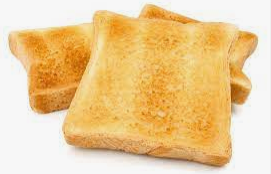

Toast

Description
Does it really need one? It's toast!
Ingredients
Steps
- Take a slice of bread
- Apply flame to one side of bread
- Apply flame until preferred crunch is acquired
- Repeat for opposite side of bread
- Note: A toaster is recommended!
Back to home page